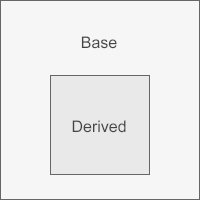
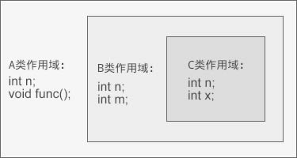

C++类继承时的作用域嵌套，破解C++继承的一切秘密！
类其实也是一种作用域，每个类都会定义它自己的作用域，在这个作用域内我们再定义类的成员，这一点已在《类其实也是一种作用域》中讲到。当存在继承关系时，派生类的作用域嵌套在基类的作用域之内，如果一个名字在派生类的作用域内无法找到，编译器会继续到外层的基类作用域中查找该名字的定义。
换句话说，作用域能够彼此包含，被包含（或者说被嵌套）的作用域称为内层作用域（inner scope），包含着别的作用域的作用域称为外层作用域（outer scope）。一旦在外层作用域中声明（或者定义）了某个名字，那么它所嵌套着的所有内层作用域中都能访问这个名字。同时，允许在内层作用域中重新定义外层作用域中已有的名字。
假设 Base 是基类，Derived 是派生类，那么它们的作用域的嵌套关系如下图所示：
派生类的作用域位于基类作用域之内这一事实可能有点出人意料，毕竟在我们的代码中派生类和基类的定义是相互分离的。不过也恰恰因为类作用域有这种继承嵌套的关系，所以派生类才能像使用自己的成员一样来使用基类的成员。
一个类作用域嵌套的例子：
运行结果：
c.biancheng.net
20
本例中，B 继承自 A，C继承自 B，它们作用域的嵌套关系如下图所示：
obj 是 C 类的对象，通过 obj 访问成员变量 n 时，在 C 类的作用域中就能够找到了 n 这个名字。虽然 A 类和 B 类都有名字 n，但编译器不会到它们的作用域中查找，所以是不可见的，也即派生类中的 n 遮蔽了基类中的 n。
通过 obj 访问成员函数 func() 时，在 C 类的作用域中没有找到 func 这个名字，编译器继续到 B 类的作用域（外层作用域）中查找，仍然没有找到，再继续到 A 类的作用域中查找，结果就发现了 func 这个名字，于是查找结束，编译器决定调用 A 类作用域中的 func() 函数。
这个过程叫做名字查找（name lookup），也就是在作用域链中寻找与所用名字最匹配的声明（或定义）的过程。
对于成员变量这个过程很好理解，对于成员函数要引起注意，编译器仅仅是根据函数的名字来查找的，不会理会函数的参数。换句话说，一旦内层作用域有同名的函数，不管有几个，编译器都不会再到外层作用域中查找，编译器仅把内层作用域中的这些同名函数作为一组候选函数；这组候选函数就是一组重载函数。
说白了，只有一个作用域内的同名函数才具有重载关系，不同作用域内的同名函数是会造成遮蔽，使得外层函数无效。派生类和基类拥有不同的作用域，所以它们的同名函数不具有重载关系。
我们不妨再来回顾一下上节的例子：
虽然 Derived 类和 Base 类都有同名的 func 函数，但它们位于不同的作用域，Derived 类的 func 会遮蔽 Base 类的 func。d 是 Derived 类的对象，调用 func 函数时，编译器会先在 Derived 类中查找“func”这个名字，发现有两个，也即void func(char*)和void func(bool)，这就是一组候选函数。
执行到第 26、27 行代码时，在候选函数中没有找到匹配的函数，所以调用失败，这时编译器会抛出错误信息，而不是再到 Base 类中查找同名函数。
换句话说，作用域能够彼此包含，被包含（或者说被嵌套）的作用域称为内层作用域（inner scope），包含着别的作用域的作用域称为外层作用域（outer scope）。一旦在外层作用域中声明（或者定义）了某个名字，那么它所嵌套着的所有内层作用域中都能访问这个名字。同时，允许在内层作用域中重新定义外层作用域中已有的名字。
假设 Base 是基类，Derived 是派生类，那么它们的作用域的嵌套关系如下图所示：

派生类的作用域位于基类作用域之内这一事实可能有点出人意料，毕竟在我们的代码中派生类和基类的定义是相互分离的。不过也恰恰因为类作用域有这种继承嵌套的关系，所以派生类才能像使用自己的成员一样来使用基类的成员。
一个类作用域嵌套的例子：
- #include<iostream>
- using namespace std;
- class A{
- public:
- void func();
- public:
- int n;
- };
- void A::func(){ cout<<"c.biancheng.net"<<endl; }
- class B: public A{
- public:
- int n;
- int m;
- };
- class C: public B{
- public:
- int n;
- int x;
- };
- int main(){
- C obj;
- obj.n;
- obj.func();
- cout<<sizeof(C)<<endl;
- return 0;
- }
c.biancheng.net
20
本例中，B 继承自 A，C继承自 B，它们作用域的嵌套关系如下图所示：

obj 是 C 类的对象，通过 obj 访问成员变量 n 时，在 C 类的作用域中就能够找到了 n 这个名字。虽然 A 类和 B 类都有名字 n，但编译器不会到它们的作用域中查找，所以是不可见的，也即派生类中的 n 遮蔽了基类中的 n。
通过 obj 访问成员函数 func() 时，在 C 类的作用域中没有找到 func 这个名字，编译器继续到 B 类的作用域（外层作用域）中查找，仍然没有找到，再继续到 A 类的作用域中查找，结果就发现了 func 这个名字，于是查找结束，编译器决定调用 A 类作用域中的 func() 函数。
这个过程叫做名字查找（name lookup），也就是在作用域链中寻找与所用名字最匹配的声明（或定义）的过程。
对于成员变量这个过程很好理解，对于成员函数要引起注意，编译器仅仅是根据函数的名字来查找的，不会理会函数的参数。换句话说，一旦内层作用域有同名的函数，不管有几个，编译器都不会再到外层作用域中查找，编译器仅把内层作用域中的这些同名函数作为一组候选函数；这组候选函数就是一组重载函数。
说白了，只有一个作用域内的同名函数才具有重载关系，不同作用域内的同名函数是会造成遮蔽，使得外层函数无效。派生类和基类拥有不同的作用域，所以它们的同名函数不具有重载关系。
我们不妨再来回顾一下上节的例子：
- #include<iostream>
- using namespace std;
- //基类Base
- class Base{
- public:
- void func();
- void func(int);
- };
- void Base::func(){ cout<<"Base::func()"<<endl; }
- void Base::func(int a){ cout<<"Base::func(int)"<<endl; }
- //派生类Derived
- class Derived: public Base{
- public:
- void func(char *);
- void func(bool);
- };
- void Derived::func(char *str){ cout<<"Derived::func(char *)"<<endl; }
- void Derived::func(bool is){ cout<<"Derived::func(bool)"<<endl; }
- int main(){
- Derived d;
- d.func("c.biancheng.net");
- d.func(true);
- d.func(); //compile error
- d.func(10); //compile error
- d.Base::func();
- d.Base::func(100);
- return 0;
- }
执行到第 26、27 行代码时，在候选函数中没有找到匹配的函数，所以调用失败，这时编译器会抛出错误信息，而不是再到 Base 类中查找同名函数。
关注微信公众号「站长严长生」，在手机上阅读所有教程，随时随地都能学习。本公众号由C语言中文网站长运营，每日更新，坚持原创，敢说真话，凡事有态度。

微信扫描二维码关注公众号